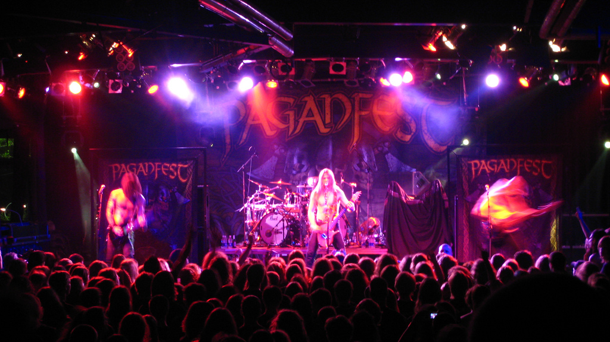
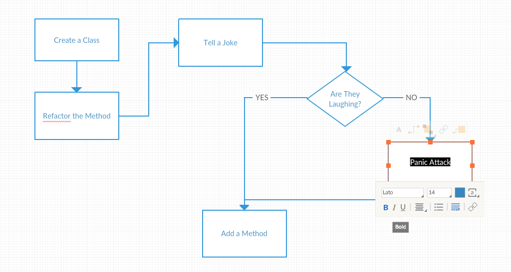
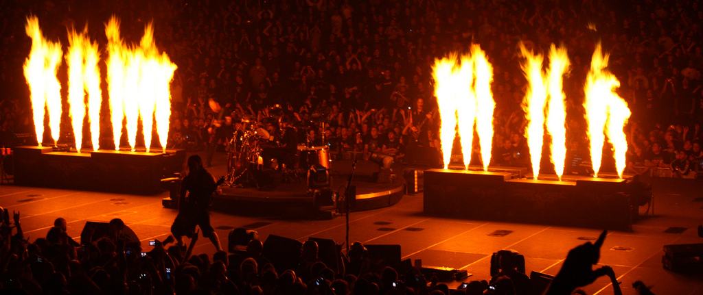
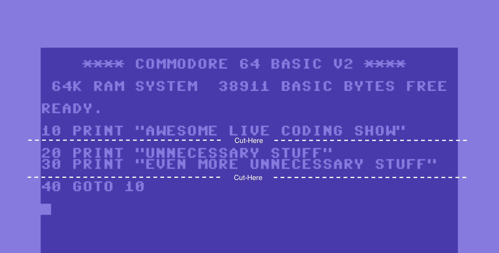
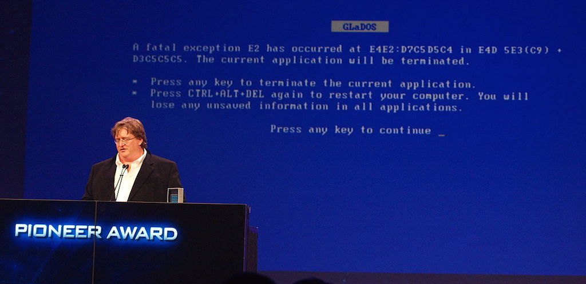
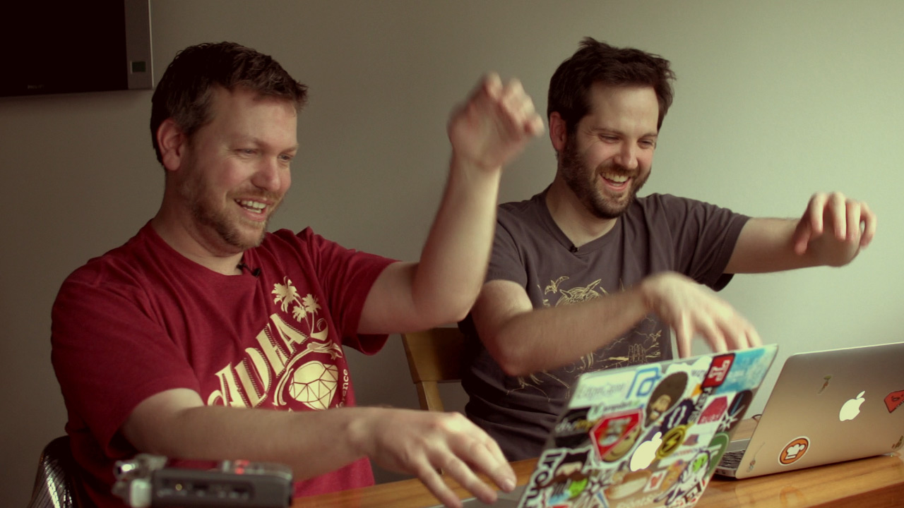
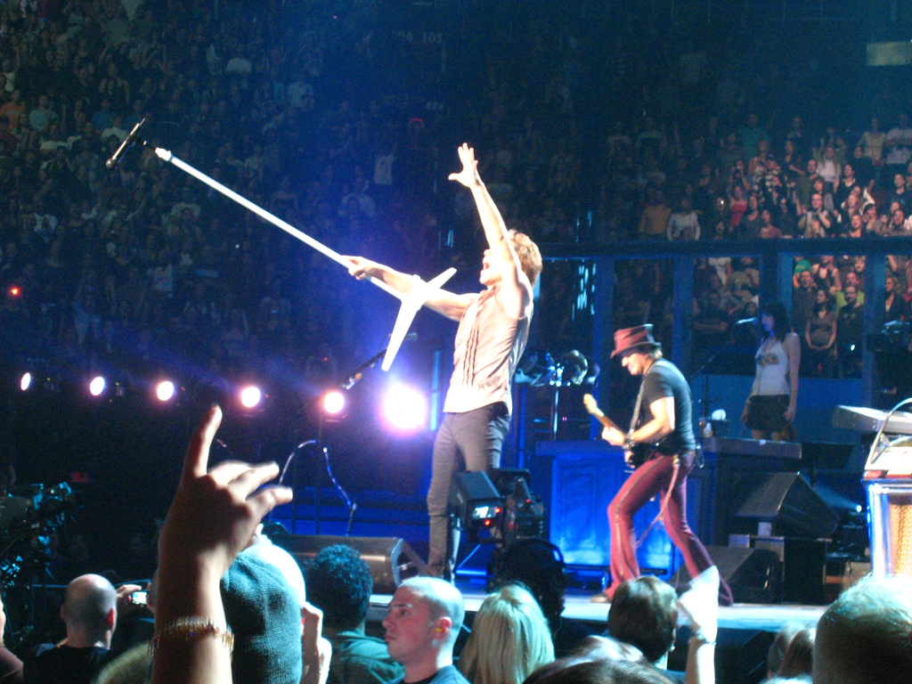
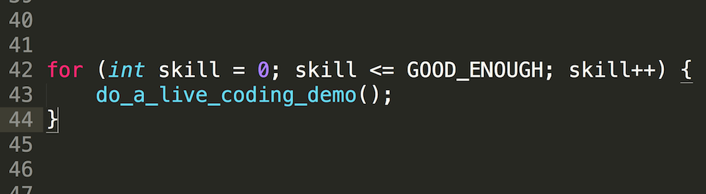

Your Live Coding Demo is Boring. Let's Fix It!
Recently I've read an interesting blog post by Alan Shrieve Your live coding demo is boring. In which he expresses categoric statement: "if you write code live on stage, then you are boring me".
It bothered me more than it should.
Specifically, the lack of any quantifiers near that statement bothered me enough to write this blog post. Had he written "if you come unprepared to a live coding demo, you are boring me" I'd have no problem with that.
But I get it.
The majority of live coding demos given at conferences are boring.
Heck, I delivered boring ones in the past, and there is a high chance you did as well.
But this is not the reason to stop performing live coding demos, as Alan suggests. Let's just stop giving boring ones. I've seen many great live coding sessions and would love to see even more of them.
And I do believe I know how to do that.
I've been giving my share of talks and lightning talks this year. And a live coding demo was an integral part of most of them. Judging on how well they were received, I presume the live coding parts were not that boring.
Seriously, though. Having done a lot of horrible ones in the past, I've been giving a lot of thought on how do deliver a good live coding demo.
Let me share what I came up with.
Live Coding Demo is a Performance
 Photo by Connor (cc)
You are on a stage. The audience is expecting a show. You are a performer, and your job is to entertain them.
If you come to the stage and expect to wing it, then Alan was right. You are lazy, and your demo will be boring (and you should feel bad).
You don't expect a musician just to play random stuff at the concert. You expect them to be prepared, play every note perfectly, interact with the audience, have (an optional) lighting system and fireworks synchronized with the music.
You expect the show!
Your live coding demo is not different.
1. Design the Show

You are going to type code. Talk and interact with the audience. Make them interested.
Live coding demo is supposed to be an asset and not a liability.
If you don't plan to make it entertaining, don't even start.
Have a good reason for live coding. To prove how simple your library is to use. To evoke nostalgic feeling about good old times. To show-off particular refactoring, editor feature or your skills.
The live coding demo makes sense only if it is better than a recorded video or code examples on slides.
You need to know what do you want to show. And how to do that.
Plan each step of your demo. Plan when and how should you interact with the audience. (Notice the absence of "if" in that sentence.) The code can be written in multiple ways. Find the most entertaining, fun or mysterious.
2. Add the Fireworks
 Photo by Gregory Wild-Smith (cc)
You are performing a show. Add the wow-factor.
Do something unexpected or interesting.
Let audience interact with what you've written. You've just live-coded a chat or a notification service? Good for you! Let them use it.
You can pick a subject outside of the audience's area of expertise. Like a Commodore64 assembly at a Ruby conference or metaprogramming in C.
Use your editor in an obscure and unexpected way. Show-off your excellent Vim skills. It might also be necessary to break out emacs and modify that Perl script.
Play music with the code or generate graphics live.
Add a plot twist to your demo. Change one line of code for dramatic results.
Do something silly like using emojis as method names.
Make it enjoyable!
3. Cut the Scope

No matter what you figured out in the previous steps. Cut it in half.
And then, cut it again.
I'm serious. You won't have time to show everything you want. Pick just one or two small things to show. Just a few lines of code.
You don't need to type from scratch. You should prepare most of your program upfront. It's also fine to paste huge chunks of boring code. You can even literally tell your audience: "let me just paste this huge chunk of boring code first", and they will appreciate that.
And then, cut the scope again.
4. Prepare for the Worst Case
"FirePhotography" by Sylvain Pedneault (cc)
{kind=link}
Your computer will break. There will be no desk on the stage. Your hands will be shaking too much to type. You won't have time.
All kind of things can and will go awry. What if you won't be able to live code at all?
Prepare for the worst case. Record a video with a live coding that you will explain on stage. Or just make slides with code examples that you will show instead.
Or even better do both of these and prepare to deliver them as a backup plan. It will give you a peace of mind, and potentially rescue you from an embarrassing situation.
You don't need to let the audience know there was a live coding planned. The backup plan will be just fine. You'll deliver the demo next time.
5. Prepare for Inconveniences
 "Gdc2010 newell portal BSOD" by Official GDC (cc)
{kind=link}
The WiFi won't work. You will need to hold a microphone with one hand. The mirroring mode will be impossible so that you will type half blind. You will make a typo and spend too much time debugging. You will forget what you wanted to do.
You've prepared for the worst case scenario. Now you need to prepare for reality. Some minor things will go wrong, and you will need to adapt and overcome them.
If you need the Internet for your demo, ask organizers for a private Wi-Fi. Some conferences provide a separate network for speakers. Prepare to use your phone as a hotspot. If possible, run a local server for things you need.
If you don't get neither a headset microphone nor a stand, just ask someone from an audience to hold it for a few minutes.
Can't get mirroring working? Try to sit sideways, so you see both audience and the screen.
Prepare the ready-made versions of your source code in different stages of development. So when you make a typo, you just copy and paste the whole thing instead of debugging the thing.
Make a joke out of the inconvenience. Pray to the live-coding-gods. Let the audience know that ou got it in a humble but confident and funny way.
In the worst case, you still have a backup plan.
6. Practice, Practice, Practice
 "Corey Haines & Aaron Patterson Programmering" by Geoffrey Grosenbach
Rehearse the ideal delivery. Rehearse the worst case scenario. Rehearse each possible inconvenience.
You will feel more comfortable doing something if you've done that before. More practice, more confidence, better delivery, better show.
While practicing, figure out the stumbling points. Spend more time practicing things that are most problematic.
But don't worry if you haven't managed to rehearse everything. You'll do just fine. There is high chance that not everything will go wrong:)
7. Interact With Your Audience
 Photo by Anirudh Koul (cc)
If you just type your code without saying anything, it will be boring.
Tell the audience what the hell are you doing and why it's great.
You designed your show. Ask questions. Let them decide what to type. Tell a joke.
Someone pointed a typo you've made? Guess what? They are paying attention! Thank them, fix the typo and continue your awesome show.
Someone asked a question about what you're doing? Good! It means they are not asleep. Answer it with a smile.
But don't dwell on too specific questions. If answering immediately bothers you, don't be afraid to defer them to the end of your talk.
8. Deliver in a Sandbox First
Don't give your first live coding demo at the big international conference.
Start with a small group of your colleagues. Then go to your local user group.
Alternatively, just organize a few of your friends and challenge them to make a 5-minute live coding demos that you deliver only to your group.
Ask for feedback in a constructive way.
For example: "What did you like about my demo?" and "What do you think I could improve?".
Even if you don't receive any feedback, each performance will give you confidence for a bigger audience.
9. DON'T STOP GIVING LIVE CODING DEMOS!!!!1111oneoneone

It happened. The demo was boring. Everything went horribly wrong.
So what?
Figure out what went wrong, and improve it.
Maybe it was ok, and only you think it was boring.
Maybe you just need more practice.
Whatever the reason. Just don't stop.
The next one will be better. And one day you will deliver a live coding demo. One you will be truly proud of.
Do you have other ideas on how to make live coding better?
Drop me a line at michal (at) 64bites.com or reach me on twitter.
I'd love to compare notes.